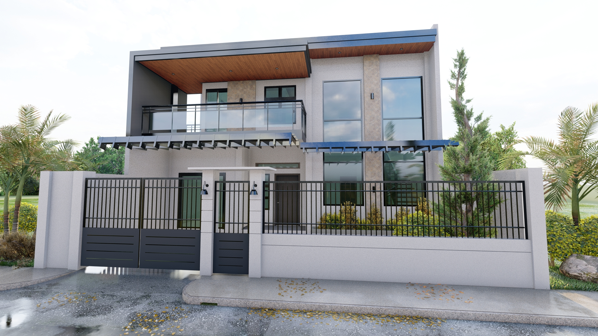
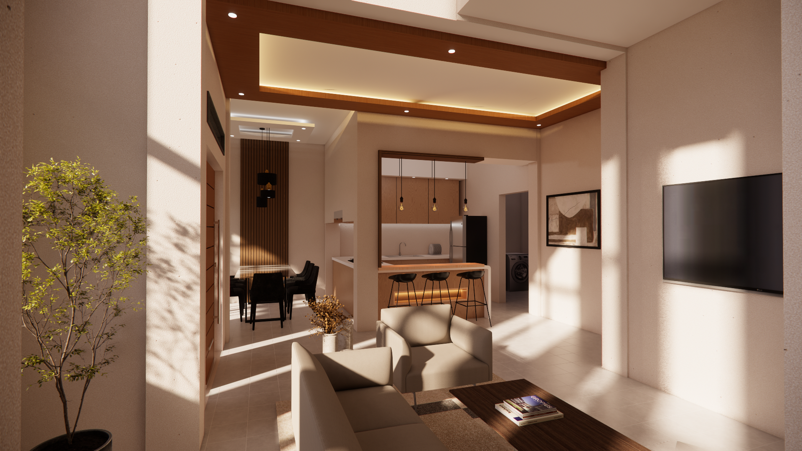

Psychosocial Rehabilitation Center
A deep dive into specialized healthcare architecture, featuring a decentralized layout with dedicated observation wings, integrated accessibility standards, and biophilic zoning.
View Project Details →Architectural design, drafting, and 3D visualization, with a passion for creating functional and sustainable spaces.
View Selected Work
A deep dive into specialized healthcare architecture, featuring a decentralized layout with dedicated observation wings, integrated accessibility standards, and biophilic zoning.
View Project Details →
A modern home design focused on clean exterior forms and seamless integration with the surrounding neighborhood context.
View Project Details →
A site planning exercise focusing on contextual integration, balancing privacy boundaries with community neighborhood connectivity.
View Project Details →I am a Bachelor of Science in Architecture graduate with a passion for creating functional, sustainable, and user-centered spaces. Skilled in architectural design, drafting, and 3D visualization, I enjoy transforming ideas into practical design solutions. As I begin my professional career, I am committed to continuous learning, collaboration, and contributing to meaningful architectural projects.
Interested in collaborating or discussing spatial design strategies? Let's connect.